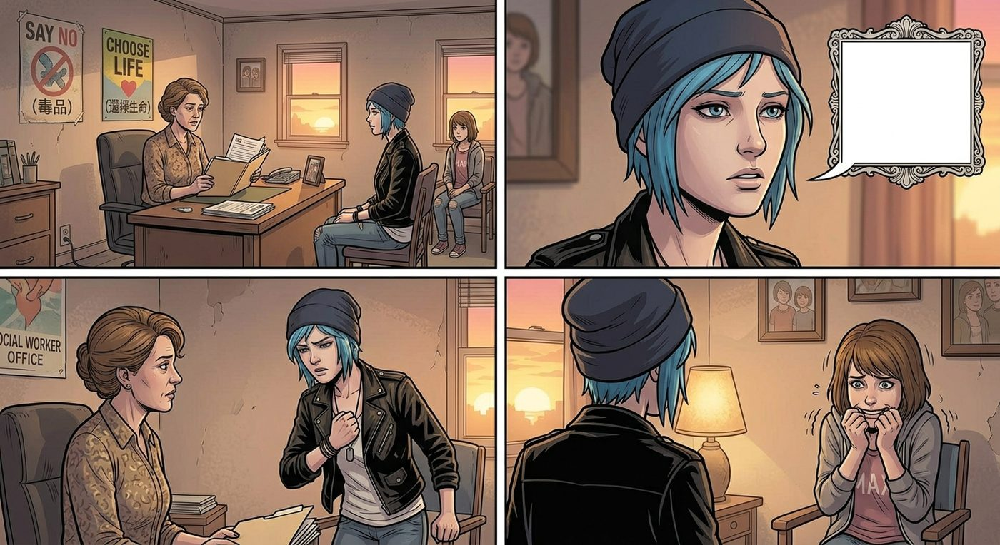

意外的津貼

一、老兵酒吧的情報
David 難得去了一趟鎮上的老兵酒吧,跟幾個退伍同袍喝了幾杯,閒聊間無意聽說,州政府最近推出一項針對戒毒人群的補助方案——只要定期配合社工訪談、完成簡單的問卷評估,就能領取一筆現金加實物津貼,金額不算多,但積少成多也是一筆錢。
回家路上,他想起 Chloe 那筆還沒填完的修車欠款,琢磨了一下,還是開口問了。
「妳有沒有興趣申請一個補助?」晚飯桌上,David 狀似隨意地開口,「州政府那邊有個戒毒津貼計畫,妳應該符合資格。」
Chloe 挑眉,叉子頓在半空:「很麻煩嗎?」
「不麻煩,」David 搖頭,「就是定期跟社工簡單聊聊,填幾張問卷,確認狀況穩定就行,流程很簡單。」
「行啊,」Chloe 想了想,爽快地點頭,「反正我早就戒得乾乾淨淨了,聊聊天就能拿錢,這種好事上哪找。」她頓了頓,難得認真地補了一句,「謝了,老兵,幫我留意這種事。」
二、飯桌上的調侃
Joyce 端著湯碗坐下,聽到這段對話,動作忽然頓了一下,眼神裡閃過一絲不易察覺的溫柔和感慨。
她想起幾年前,Chloe 動不動就把自己關在房裡,對誰說話都帶著刺,連一句「謝謝」都說得像是要她命似的;想起那些三更半夜擔心她會不會又惹上什麼麻煩、輾轉難眠的夜晚。而眼前這個會主動跟繼父道謝、會記得申請補助貼補家用的女兒,跟記憶裡那個渾身戒備的孩子,像是隔著一段她一度以為再也跨不過去的距離。
「我們家 Chloe,」她輕聲說,語氣裡帶著毫不掩飾的感慨,「最近是越來越懂事、越來越有禮貌了。」
Chloe 被這句話裡藏著的重量觸動了一下,耳根微微發紅,一時不知道該怎麼接話,只好用慣常的嘴硬掩飾這份不自在。
「什麼跟什麼,」她故作輕鬆地反駁,「誰規定朋克就一定要目中無人、六親不認的?這根本是刻板印象,朋克精神講究的是反抗建制,又沒說連基本禮貌都要一起反抗掉。」
「喔?」David 挑眉,難得配合地接了句,「那你上次跟校長頂嘴,那也算符合朋克精神範疇?」
「那不一樣,」Chloe理直氣壯,「那是反抗形式主義的建制暴政,跟禮貌問題完全是兩碼事。」
一家人被她這套歪理逗得哭笑不得,飯桌上的氣氛難得地輕鬆熱鬧。Joyce 看著這一幕,悄悄用圍裙擦了擦眼角,笑意裡藏著一絲連自己都沒察覺的濕潤。
三、社工日的疲憊
到了約定好的社工訪談日,Chloe 頂著一張略顯疲憊的臉,揉著發僵的脖子,坐進候診室的椅子裡,忍不住小聲抱怨了一句「早知道出門前先吞片止痛藥」。
Max 陪著她一起來,見狀關切地湊過去:「怎麼了,不舒服?」
「脖子僵得跟塊木板似的,」Chloe 苦笑著轉了轉脖子,發出幾聲輕微的咯咯聲響,「昨晚熬夜熬過頭了。」
「熬夜幹嘛?」
Chloe 有點不好意思地撓了撓頭:「用那個 AI 腦洞生成工具,」她說,「輸入我們倆的設定,讓它自己編各種平行世界的故事線玩,結果一發不可收拾,玩到忘記時間,脖子維持同一個姿勢盯著螢幕看了快四個小時。」
Max 忍不住笑出聲:「妳是說,妳自己給自己腦補同人故事,玩到後半夜?」
「別笑,」Chloe瞪她一眼,又有點心虛地小聲補充,「其中有幾個平行世界的設定,還挺帶感的,改天放給妳看看,說不定妳也會上頭。」
Max 笑著搖搖頭,伸手替她按了按緊繃的肩頸:「行吧,下次熬夜前記得先設鬧鐘提醒自己。」
「知道了知道了,」Chloe 舒服地瞇起眼,靠在她掌心的按壓下,「下次一定注意。」
候診室的廣播恰好叫到了她的名字,Chloe 站起身,伸了個懶腰,朝 Max 眨眨眼。
「行了,」她說,「陪我去『表演』一下悔改的乖孩子形象,聊完咱們就能去領錢了。」
四、過度投入的表演
社工辦公室不大,擺著一張辦公桌和兩張椅子,牆上貼著幾張色彩鮮豔卻透著陳舊感的禁毒宣傳海報。Max 被允許陪同坐在角落的旁聽椅上,社工——一位神情疲憊、顯然見過太多場面的中年女性——翻開手裡的表格,準備開始例行問診。
「先簡單聊聊,」她說,「最近的生活狀態、有沒有復發的衝動之類的。」
Chloe 深吸一口氣,忽然挺直腰背,表情肅穆得像是要上台演講,聲音也刻意壓低,帶上一種老掉牙禁毒公益廣告特有的、字正腔圓的煽情腔調。
「毒品,」她一字一句地開口,眼神望向遠方,彷彿背後有攝影機正在拍攝,「曾經讓我以為那是逃避現實的出口,但我現在明白了——真正的力量,來自於直面自己的傷痛,而不是麻痺它。每一天清醒的日子,都是我對過去的自己,交出的一份答卷。」
她越說越投入,甚至配上了一個握拳貼胸口的誇張手勢,活脫脫像是從九十年代電視台深夜播出的公益宣傳片裡走出來的角色。
坐在角落的 Max,肩膀開始控制不住地顫抖,拚命咬著嘴唇才沒讓自己笑出聲。
社工面無表情地聽完這段慷慨激昂的演說,筆尖在表格上輕輕敲了兩下,語氣平淡得像是在念天氣預報。
「妳直接在這幾個選項打勾就行,」她指了指表格上簡單的是非題選項,「表演得再精彩,也不會有額外獎金,津貼金額是固定的。」
辦公室裡陷入一陣尷尬的寂靜。
Chloe 臉上那副慷慨激昂的表情僵了半秒,悻悻然地收起握拳的手勢,清了清嗓子:「……我就是想表達得誠懇一點。」
「誠懇不誠懇,」社工翻了頁,頭也沒抬,「跟妳有沒有按時完成訪談,是兩件事。」
Max 這下是真的繃不住了,「噗嗤」一聲笑出來,又慌忙用手捂住嘴。
Chloe 飛快地瞪了她一眼,趁社工低頭寫字的空檔,伸手在桌下狠狠掐了一把 Max 的大腿,用氣音威脅:「別笑!」
「我沒——」Max 拚命憋著笑意,眼淚都快擠出來了,肩膀依然抖個不停。
Chloe 深吸一口氣,重新擺出一張儘量正經的臉,乖乖低頭在表格上一項一項打勾,活像個被抓包演戲失敗、只好認命回歸樸實作答的學生。